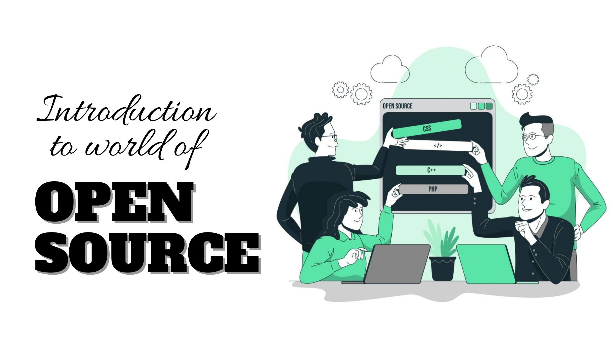

Did you know that a large part of the software you use every day was probably built with tools and technologies that are freely available for anyone to download, install, study, and modify? The operating system running the server that’s delivering this webpage to you, the library securing your network traffic to this website…. all of these things were built on or with the help of open-source technology!!
Open Source means that it is publicly available to use and modify.In simple words, we can describe an open-source project assource code made available to the public to view, use, modify, and distribute under a permissive licensebr
In a classroom setting, think of a shared document where students can suggest edits,but the teacher must approve changes before they become final. Similarly, in open-source code development, contributors propose changes that undergo review by project maintainers before being merged into the official codebase. The success of open source relies on diverse contributions, not just coding skills. Wikipedia exemplifies this collaborative approach, where individuals with various expertise contribute to create a comprehensive and accessible resource for all
At the industry level, you’ll find mainly two types of software licenses: Open source and Proprietary/Closed source. As opposed to open source, in proprietary software, the source code is available to its developers. Users have to sign a license inhibiting them from making any changes to the software. So if a user faces any issue while using the software, they need to report it to the creator/author. Thus, the process of resolving an issue is relatively tedious. So you can see why many organizations prefer to keep their
software open source.
Linux Operating System, Android, Firefox, VSCode, VLC Media Player, WordPress, etc. are all examples of open-source projects. Yes, it might be shocking to you that most of the software you are using is open source and you can also contribute to modifying
them.
Now let us move onto Why you should contribute to open-source:
- To add new features to the software
- To find a mentor if you need one
- To be come a much better developer
- To gain a much deeper knowledge about the software that’s being used
- To build up your reputation and help grow your career
- It builds your resume by demonstrating that you can collaborate with others on code.
- It gives you practice with Git and GitHub, which is a valuable skill.
- It helps you to build relationships in the open-source community.
- It feels good to give back to a project that you use!
- Last but not least, It’s fun

So the question arises… How to get started?
If you know the basics of coding and have dabbled in a programming language, you're already set to dive into the world of open-source contributions! Start by exploring GitHub, a fantastic platform for sharing and collaborating on code. GitHub is like a public space where people showcase their code. You can find both public and private projects. Public ones, often called repositories or "repos," are where
the magic happens. These repos are like communal notebooks where anyone with a bit of software know-how can chip in to improve the product.
For a cool starting point, check out the trending page on GitHub. It's like the hotspot for exciting projects catching everyone's attention. Click through different repos, peek into
their tabs, and see what's happening. The "Issues" tab is particularly interesting– it's where people discuss problems with the software. It's like a virtual classroom where students (contributors) and the teacher (community) brainstorm to solve coding puzzles. Explore, learn, and maybe even drop a suggestion or two– it's a hands-on way
to level up your coding skills!
Sometimes the hardest part about getting into open source is finding a project or initiative that you can connect with or are inspired to contribute to. Here are some links
that will get you started in the open-source world:
- first-timers only
- first contribution
- first-timers only
- first-timers only
- contributor ninja
- open source frinday
- 24 pull request
- python project scripts
- hebitica
- code triage
Now once you come across a project you would like to contribute to, you’d have to follow these steps:
- Go through its documentation and connect with the mentor or project admin. Look for the issues you can work on. The process is on a first-come, first-served basis. Select an unassigned issue and ask the mentors to assign it to you
- You will have a limited amount of time to work on this issue as per the program or community guidelines. If you get stuck somewhere or have doubts while resolving the issue, reach out to mentors or other community members.
- Once done with the issue, raise a pull request or create a git patch as per the guidelines for contributors.
- Sometimes you might fail to push a pull request because of a given amount of time. While making a pull request, conflicts might also arise. But try to resolve these conflicts and raise a pull request again.
...The feeling when finally your pull request is accepted is damn amazing! And Viola! Youhave made achange for the community
Once you are a part of the community, you shouldn’t stop at a single contribution.Contributing from time to time will not only increase your chances of getting selected for popular programs but also ultimately lead to the growth of the community. There are a lot of opportunities you can take advantage of and learn something new. All you need is to decide to begin and get started.
Now that you are all set…..Start Contributing!!!
All the very best for your journey into the world of open source